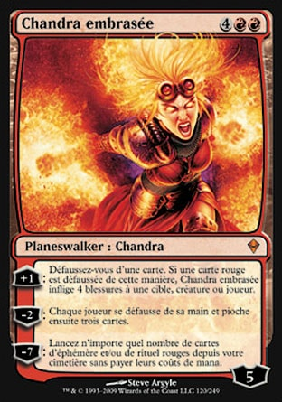

Débuter dans Magic Arena
Je ne parlerais que du mode Standard de Magic Arena, celui que je pratique.
Au début de Magic Arena , il vous sera proposé de faire un tutoriel , faite le pour débloquer les premiers decks de chacune des couleurs
Ensuite, il faudra jouer contre l'IA pour gagner de l'expérience et débloquer des cartes et des decks préconstruits en double couleurs
Enfin il vous sera possible de jouer contre les autres joueurs , alors vous aurez des quêtes journalières et des pièces pour acheter des cosmétiques ou des boosters.
Les Jokers
Parfois dans les boosters que vous achetez avec de l'or ou des gemmes (monnaie payante du jeu) , vous aurez des jokers.
les jokers sont des jetons pour créer des cartes dans le menu de création du deck, en appuyant sur fabriquer une carte.
Après avoir appuyé, vous aurez tout un panel de carte transparante , ceux-ci sont les cartes que vous ne posséder pas encore, chacune à un joker spécifique.
Les jokers communs / 33% de chance
Les jokers inhabituels / 20% de chance
Les jokers rares / 4% de chance
Les jokers mythiques / 4% de chance
un booster des modes draft où paquet Scellé ne peut en aucun cas contenir de joker.
Je vous conseille de ne pas créer sur un coup de tête, prenez le temps de regarder chacune des cartes dans la liste, et de la couleur que vous recherchez, afin de faire un deck et finalement utiliser vos jokers pour le façonné.
Faire son deck
Pour faire un deck , il existe differente méthode ,avec un papier et un stylo est noter son deck sur une feuille en regardant les cartes dans le créateur de carte vue plus tôt.
Utiliser le créateur de carte, ajouter les cartes non posséder et posséder (les non posséder s'afficheront en rouge) et faire crée les cartes non posséder, si l'on a assez de joker.
Allez sur deckstats, pour prendre des decks existants ou alors utiliser le créateur de deck est demandé aux utilisateurs du site leur avis sur votre deck liste. Voici le lien du site :deckstats.net
regarder des vidéos youtube, ou alors , allez en boutique spécialisés est voir avec le vendeur spécialisé en carte (souvent , il joue à Magic)